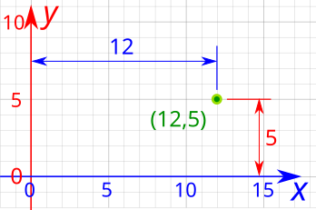
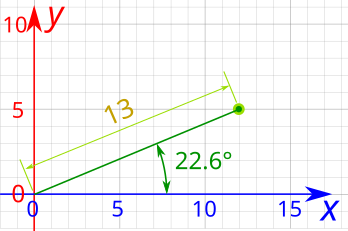
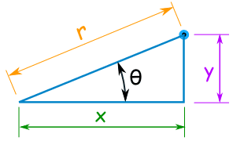
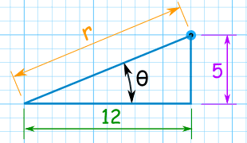
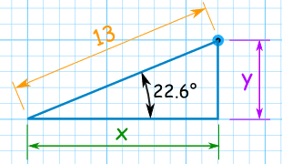
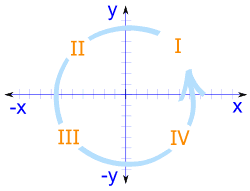
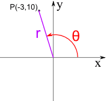
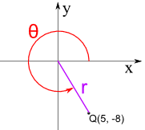

Polar and Cartesian Coordinates
To pinpoint where we are on a map or graph there are two main systems:
Cartesian Coordinates
Using Cartesian Coordinates we mark a point by how far along and how far up it is:

Polar Coordinates
Using Polar Coordinates we mark a point by how far away, and what angle it is:

Converting
To convert from one to the other we will use this triangle:

To Convert from Cartesian to Polar
When we know a point in Cartesian Coordinates (x,y) and we want it in Polar Coordinates (r,θ) we solve a right triangle with two known sides.
Example: What is (12,5) in Polar Coordinates?

Use Pythagoras Theorem to find the long side (the hypotenuse):
Use the Tangent Function to find the angle:
Answer: the point (12,5) is (13, 22.6°) in Polar Coordinates.

What is tan-1 ?
It is the Inverse Tangent Function:
Summary: to convert from Cartesian Coordinates (x,y) to Polar Coordinates (r,θ):
- r = √ ( x2 + y2 )
- θ = tan-1 ( y / x )
Note: Calculators may give the wrong value of tan-1 () when x or y are negative, see below for more.
To Convert from Polar to Cartesian
When we know a point in Polar Coordinates (r, θ), and we want it in Cartesian Coordinates (x,y) we solve a right triangle with a known long side and angle:
Example: What is (13, 22.6°) in Cartesian Coordinates?

Answer: the point (13, 22.6°) is almost exactly (12, 5) in Cartesian Coordinates.
- x = r × cos( θ )
- y = r × sin( θ )
How to Remember Which is Which?
(x,y) is alphabetical,
(cos,sin) is also alphabetical
Also "y and sine rhyme" (try saying it!)
And in JavaScript (if you like coding):
function toCartesian(r, angle) {
let x = r * Math.cos(angle)
let y = r * Math.sin(angle)
return [x, y]
}
But What About Negative Values of X and Y?

Four Quadrants
When we include negative values, the x and y axes divide the
space up into 4 pieces:
Quadrants I, II, III and IV
(They are numbered in a counter-clockwise direction)
When converting from Polar to Cartesian coordinates it all works out nicely:
Example: What is (12, 195°) in Cartesian coordinates?
r = 12 and θ = 195°
- x = 12 × cos(195°)
x = 12 × −0.9659...
x = −11.59 to 2 decimal places - y = 12 × sin(195°)
y = 12 × −0.2588...
y = −3.11 to 2 decimal places
So the point is at (−11.59, −3.11), which is in Quadrant III
But when converting from Cartesian to Polar coordinates ...
... the calculator can give the wrong value of tan-1
It all depends what Quadrant the point is in! Use this to fix things:
| Quadrant | Value of tan-1 |
|---|---|
| I | Use the calculator value |
| II | Add 180° to the calculator value |
| III | Add 180° to the calculator value |
| IV | Add 360° to the calculator value |
(Yes, both Quadrant's II and III are "Add 180°")

Example: P = (−3, 10)
P is in Quadrant II
- r = √((−3)2 + 102)
r = √109 = 10.4 to 1 decimal place - θ = tan-1(10/−3)
θ = tan-1(−3.33...)
The calculator value for tan-1(−3.33...) is −73.3°
So the Polar Coordinates for the point (−3, 10) are (10.4, 106.7°)

Example: Q = (5, −8)
Q is in Quadrant IV
- r = √(52 + (−8)2)
r= √89= 9.4 to 1 decimal place - θ = tan-1(−8/5)
θ = tan-1(−1.6)
The calculator value for tan-1(−1.6) is −58.0°
So the Polar Coordinates for the point (5, −8) are (9.4, 302.0°)
Summary
To convert from Polar Coordinates (r,θ) to Cartesian Coordinates (x,y) :
- x = r × cos( θ )
- y = r × sin( θ )
To convert from Cartesian Coordinates (x,y) to Polar Coordinates (r,θ):
- r = √ ( x2 + y2 )
- θ = tan-1 ( y / x )
The value of tan-1( y/x ) may need to be adjusted:
- Quadrant I: Use the calculator value
- Quadrant II: Add 180°
- Quadrant III: Add 180°
- Quadrant IV: Add 360°